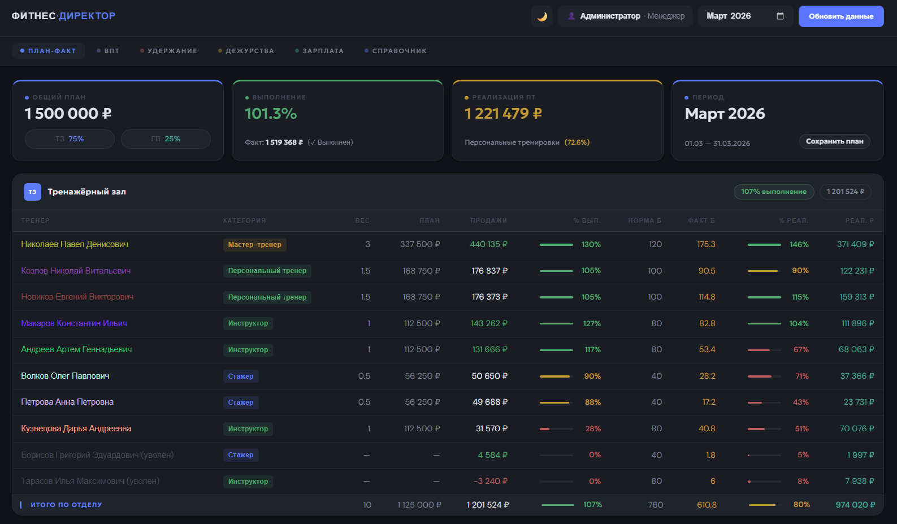
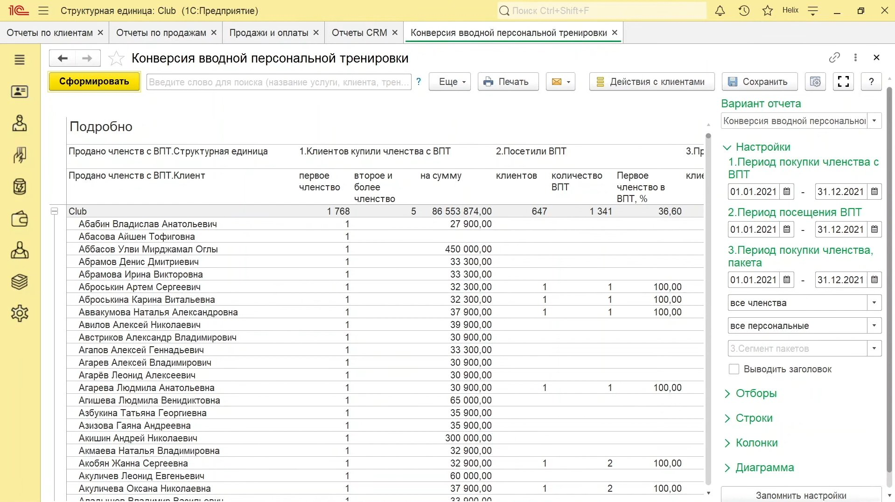
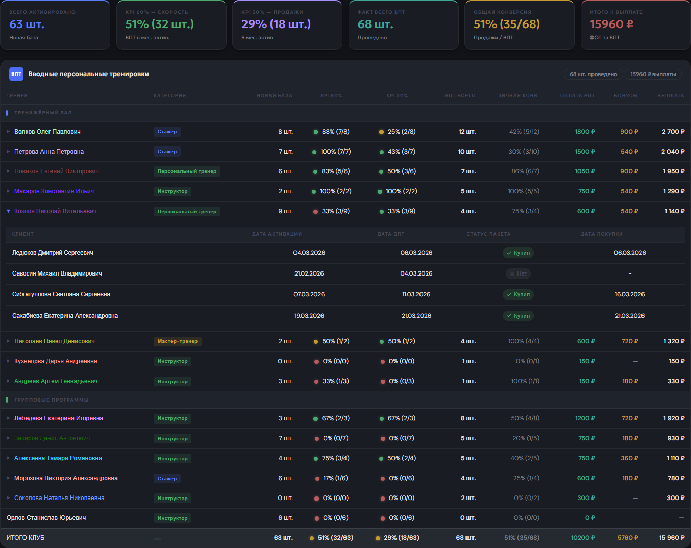
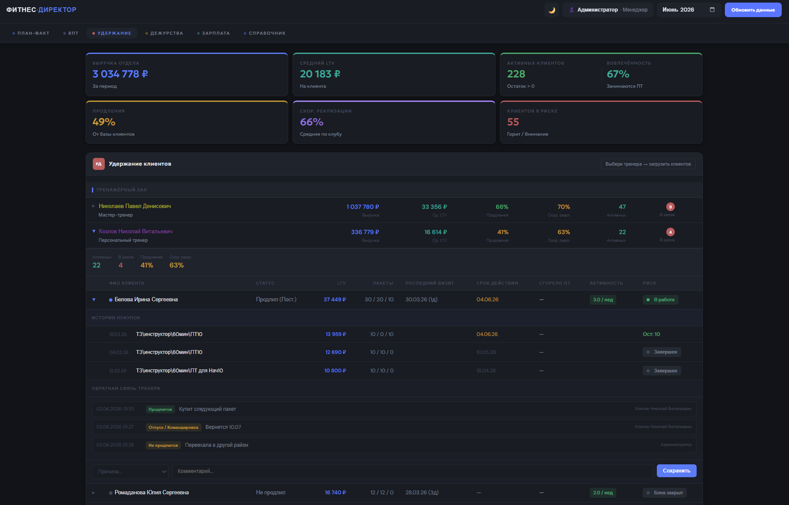
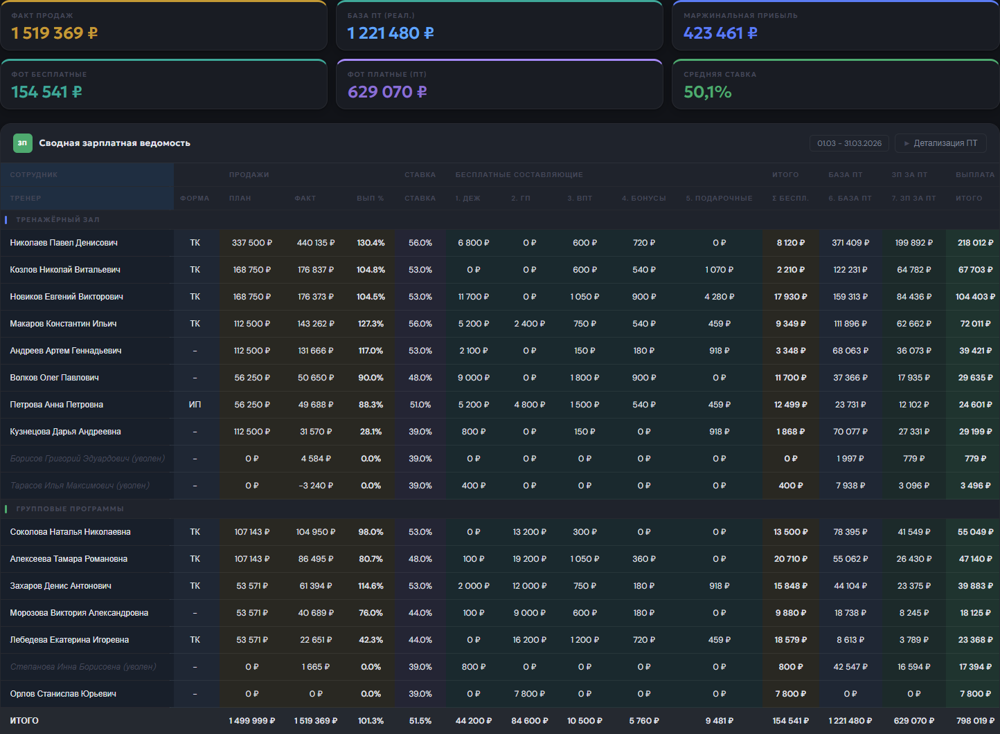
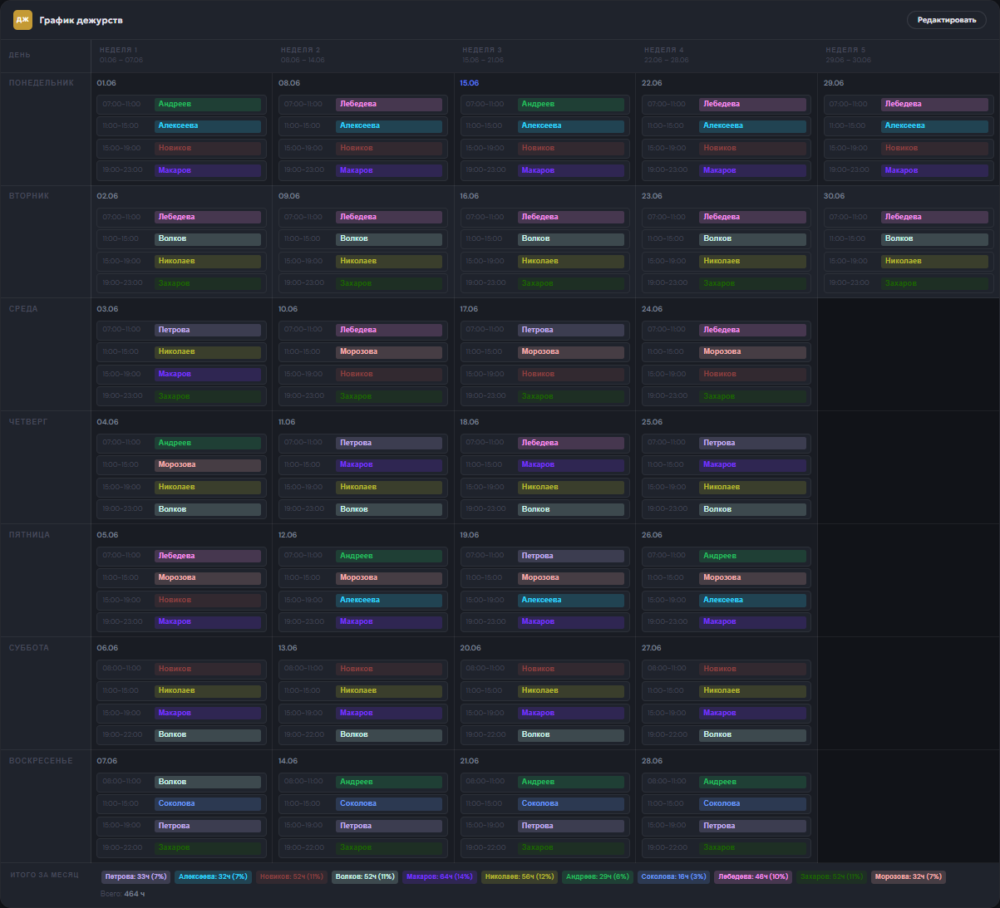
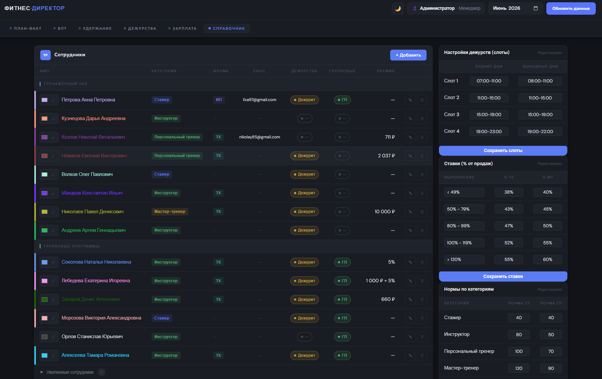

Фитнес-директор автоматически выгружает данные из 1С и превращает их в готовую аналитику — план-факт, конверсия ВПТ, реализация, продления, остатки тренировок. Всё в одном месте, без ручной сводки в Excel.
За 30 минут покажем как Фитнес-директор закрывает задачи с которыми вы работаете каждый день — и ответим на все вопросы.
Открываете 1С, выгружаете отчёт по продажам, копируете в Excel, сводите вручную с реализацией. Только чтобы понять где вы находитесь относительно плана.
Открываете браузер — план-факт по каждому тренеру уже посчитан. Продажи, реализация, процент выполнения. Прямо сейчас.
Чтобы увидеть конверсию каждого тренера из ВПТ в пакет и посчитать бонусы которые положены тренеру за продажу после ВПТ — нужно свести три отчёта из 1С вручную. На это уходит несколько часов.
Конверсия каждого тренера из ВПТ в пакет и бонусы уже на экране. Видите кто работает хорошо, кому нужна помощь. Без единой выгрузки.
Чтобы понять у кого из клиентов заканчивается пакет и кого нужно закрыть на продление прямо сейчас — нужно выгрузить остатки тренировок по каждому тренеру отдельно и разослать информацию вручную. К тому моменту когда тренер это получает — время уже упущено.
Тренер видит по каждому клиенту — дату последнего визита, остаток тренировок и когда сгорает пакет. Оставляет комментарий по статусу продления прямо в системе. Руководитель видит кто из клиентов в работе, кому нужна помощь или персональное предложение — и принимает решение до того как клиент ушёл.
Тренер не знает сколько он заработал до конца месяца. Зарплата — чёрный ящик. Вопросы к руководителю, недовольство, демотивация. А руководитель тратит время на объяснения вместо работы с командой.
Тренер в любой момент видит свою зарплату в реальном времени — продажи, реализация, бонусы, дежурства, групповые. Знает что именно нужно сделать чтобы заработать больше. Руководитель не отвечает на вопросы про деньги — тренер всё видит сам.
Система автоматически получает данные из 1С Фитнес-клуб несколько раз в день и превращает их в понятные инструменты управления
Шесть модулей закрывают шесть задач, на которые в 1С уходят часы выгрузок и Excel-сводок. Покажем, как это выглядит.
В 1С факт продаж и реализации хранится в разных отчётах. Чтобы понять процент выполнения по каждому тренеру и по отделу — нужно выгрузить продажи, выгрузить реализацию, свести их вручную с учётом весов ТЗ/ГП, и каждого тренера.
Раздел «План-факт» показывает это автоматически: план, факт продаж, процент выполнения с цветовой индикацией, норму и факт баллов, процент и сумму реализации детализировано, среднюю норму тренировок в день и их количество за период — всё по каждому тренеру и по отделу в целом, на одном экране.

Отчёт по конверсии ВПТ — один из 35 отчётов, которые нужны фитнес-директору. Не разделяет конверсию по недавно активированным и общей базой клиентов, не считает выплаты и бонусы. Для полной картины — ещё несколько отчётов и ручная сводка в Excel.
Раздел «ВПТ» показывает всё сразу: новую базу, скорость отработки ВПТ, личную конверсию каждого тренера в пакет, выплаты и бонусы — на одном экране. Один экран вместо пяти отчётов.


В 1С нет единого представления по удержанию — остатки тренировок, дату последнего визита и срок действия пакета нужно искать по каждому клиенту отдельно в разных отчётах.
Раздел «Удержание» показывает по каждому тренеру список его клиентов с остатками тренировок, датой и риском сгорания пакета, статусом активности, процентом удержания и LTV. Тренер оставляет комментарий о статусе продления прямо в системе — руководитель видит кто из клиентов в работе, а кто требует внимания.

В 1С есть только сырые данные о продажах. Расчёт итоговой зарплаты с учётом ставок, категорий, бонусов за ВПТ, дежурства и групповые программы каждый раз делается вручную в Excel.
Раздел «Зарплата» рассчитывает итоговую выплату каждому тренеру автоматически, с полной детализацией по всем составляющим — тренер в любой момент видит сколько он заработал и из чего складывается эта сумма.

В 1С модуля учёта дежурств тренажёрного зала нет вообще — это всегда отдельный график в Excel или на бумаге, который никак не связан с остальными показателями.
Раздел «Дежурства» показывает график на весь месяц с разбивкой по неделям, позволяет назначать тренеров на смены и автоматически считает количество часов и процент нагрузки каждого тренера.

В 1С хранятся базовые данные о сотрудниках, но нет инструментов для настройки логики расчётов — категорий, ставок, весов, форматов тренировок. Эти параметры каждый раз держатся в голове или в отдельном файле.
Раздел «Справочник» — это центр управления системой: здесь задаются категории и ставки тренеров, нормы по баллам, коэффициенты для разных форматов тренировок и веса для расчёта плана. Именно эти настройки определяют, как считаются все остальные разделы системы.

Отчётность перед управляющей компанией, сравнение показателей между клубами, единые стандарты управления — всё это становится проще когда цифры собираются автоматически.
Поиск и адаптация нового фитнес-директора — месяцы и сотни тысяч рублей. Невыполненный план из-за отсутствия оперативных данных — потери которые не вернуть. Фитнес-директор (система) делает любого руководителя на этой позиции эффективнее — с первого дня.
Нет. Всё внедрение берём на себя. От вас нужен только доступ к 1С и готовность ответить на несколько уточняющих вопросов про специфику клуба.
1-2 недели. Команда в процессе не участвует — только руководство отвечает на уточняющие вопросы. Работа клуба не останавливается.
Это стандартная ситуация — у каждого клуба своя логика. В процессе внедрения система настраивается под ваши настройки 1С Фитнес-клуб и номенклатуру.
Работаем по NDA. Ваши данные не передаются третьим лицам и не используются в каких-либо других целях.
Да. В процессе внедрения обсуждаем ваши задачи и при необходимости дорабатываем функционал под конкретные потребности клуба.
Запишитесь на демонстрацию — покажем как Фитнес-директор работает на реальных данных и ответим на все вопросы.